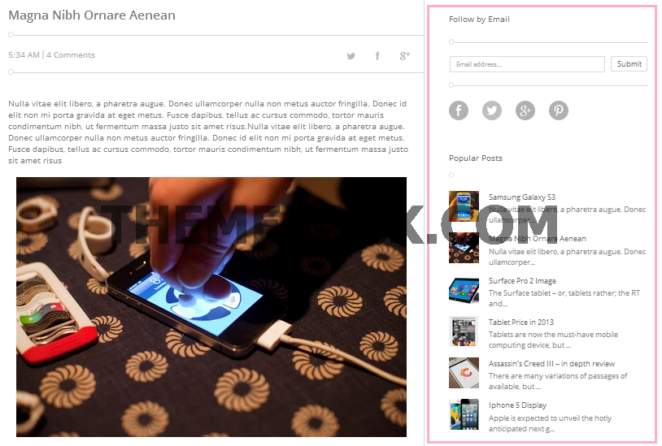

All images and scripts need to live somewhere on the web so your blog can access them. Unfortunately Blogger will not help you host these and, most likely, the theme default will use the assets of the blogger template maker hosted on the web, in this case, all file (including but not limited to images, script) hosted in my own hosting
If the template maker decides to move or delete these assets, or something happens to their hosting account, then they vanish from your blog theme as well.
So, rather than rely on an anonymous third party, it makes sense to host the images and scripts for your blog somewhere you have control over them.
I recommend you to do a backup for at least the template script for every change that you make. By doing a backup, you can restore the data anytime.
2. Upload Template
The template that you've downloaded is stored as a *zip file. Extract the *zip file before uses. You can upload your template by two ways below.
1st. Directly Upload
On Blogger Dashboard Click
Choose Backup/Restore button
Click Choose File and select file name is "AJB.SPOT.xml"
Then click Upload button to Upload Template
See the image below for more details.
2st. Manually Upload
Open Template "AJB.SPOT.xml" by Notepad++ software and Copy all
On Blogger Dashboard Click
Choose Edit HTML button, and then paste all copied code to it.
Click Save template to complete your upload
See the image below for more details.
3. Using Layout
To use the Layout, from your dashboard, go to
Layout is devided into three sections. See explain :
Header Section
SlideShow Section
List Posts Section
Blog Posts Section
Right Section
Comments Section
Footer Section
1.Change Logo (Header Widget)
In Header Section, by click "Edit" button in the bottom right of widget Header. You come to options to Customize this Widget like the image below :
You can use blog title to make logo with text or you can use image to make logo.
2.SlideShow
To show SlideShow you click on "Edit" on SlideShow Widget or Create new Widget with type is HTML Widget. Put HTML code here to content:
In this demo I load 3 posts from Label_name is featured posts with style name is style-1 and display name is Featured Posts and Describe is What Are The Amazing Posts
[3][featured posts][style-1][Featured Posts][What Are The Amazing Posts]
To load random posts, you change label_name to true like:
[3][true][style-1][Featured Posts][What Are The Amazing Posts]
To load latest posts, you change label_name to recent like:
[3][recent][style-1][Featured Posts][What Are The Amazing Posts]
To display posts as slider-2, you use short-code like:
To load random posts, you change label_name to true.To load latest posts, you change label_name to recent as mentioned above.
4. Blog Posts
To enable Author Profile below posts, you click on Edit button in Blog Posts widget and choose : Show Author Profile Below Post like :
5. Right Section

In this demo, there are 4 widgets. You keep Follow By Email, Popular Posts, Category in default.
To show Accordition, you use code below :
<section class="ac-container">
<div>
<input id="ac-1" name="accordion-1" type="radio" checked />
<label for="ac-1">About us</label>
<article class="ac-small">
<p>Well, the way they make shows is, they make one show. That show's called a pilot. Then they show that show to the people who make shows, and on the strength of that one show they decide if they're going to make more shows.</p>
</article>
</div>
<div>
<input id="ac-2" name="accordion-1" type="radio" />
<label for="ac-2">How we work</label>
<article class="ac-medium">
<p>Like you, I used to think the world was this great place where everybody lived by the same standards I did, then some kid with a nail showed me I was living in his world, a world where chaos rules not order, a world where righteousness is not rewarded. That's Cesar's world, and if you're not willing to play by his rules, then you're gonna have to pay the price. </p>
</article>
</div>
<div>
<input id="ac-3" name="accordion-1" type="radio" />
<label for="ac-3">References</label>
<article class="ac-large">
<p>You think water moves fast? You should see ice. It moves like it has a mind. Like it knows it killed the world once and got a taste for murder. After the avalanche, it took us a week to climb out. Now, I don't know exactly when we turned on each other, but I know that seven of us survived the slide... and only five made it out. Now we took an oath, that I'm breaking now. We said we'd say it was the snow that killed the other two, but it wasn't. Nature is lethal but it doesn't hold a candle to man. </p>
</article>
</div>
<div>
<input id="ac-4" name="accordion-1" type="radio" />
<label for="ac-4">Contact us</label>
<article class="ac-large">
<p>You see? It's curious. Ted did figure it out - time travel. And when we get back, we gonna tell everyone. How it's possible, how it's done, what the dangers are. But then why fifty years in the future when the spacecraft encounters a black hole does the computer call it an 'unknown entry event'? Why don't they know? If they don't know, that means we never told anyone. And if we never told anyone it means we never made it back. Hence we die down here. Just as a matter of deductive logic. </p>
</article>
</div>
</section>
6. Comments Section
By click Edit HTML Widget in this section, you fill code below to show comments:
<div class="posttitle"><div class="titlep"><a href="/search/label/recent">Recent Comments</a></div><div class="descript"><h3>What people are saying : </h3></div></div>
<script>
if(getTitles)
document.write('<script type="text/javascript" src="http://'+window.location.hostname+'/feeds/posts/summary?redirect=false'+maxResultsPosts+'&alt=json-in-script&callback=getPostUrlsForComments"></'+'script>');
document.write('<script type="text/javascript" src="http://'+window.location.hostname+'/feeds/comments/default?redirect=false'+maxResultsComments+'&alt=json-in-script&callback=showRecentComments"></'+'script>');
</script>
7. Footer Section
Footer. From Left to Right is Photos on flickr, Tag, PopularPosts, Contact Form. You can change to any kind of widget you want.
Create Flickr Photo Widget
By Adding the kind of widget is "HTML/Javascript", you fill into the content with flickr photo js like :
By Adding the kind of widget is "Labels", you should customize like image below :
Popular Posts
By Adding the kind of widget is "Popular Posts"
Create Contact Form
By Adding the kind of widget is "Contact Form"
4. Customize Global Script.
Open AJB.SPOT.xml with Notepad++ or in Edit HTML mode in Blogger, you find with keyword </head> and see the code ahead like image below:
1.Config the number of posts
As the image below, default number of posts is 4. You can change it to display more post. But you should change the number of post in this script is equal with the default blogger number of post.
2.Change social media links
You can change links of social media in the author profile and social media in the bottom of page.
5. Customize Main Menu
Open HTML Edit mode in blogger or open AJB.SPOT.xml by notepad++, you find with keyword class='menu' and see menu code, then customize it for yourself. Like image below:
6. Run Responsive Design
To run Responsive, you need to disable mobile Mode (Dashbroad -> Template -> Look image below):
7. Customize Design
To change color, font, blog main color....you just come to :